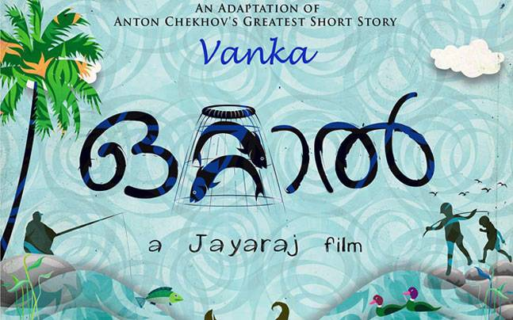

ആന്റൺ ചെഖോവ് (Anton Chekhov)
Written By: രാജു ജോസഫ്

ഏറ്റവും മഹാന്മാരായ ചെറുകഥാകൃത്തുക്കളിൽ ഒരാളായിട്ടാണ് ചെഖോവ് കരുതപ്പെടുന്നത്. ചെറുകഥയിൽ ആധുനികത തുടങ്ങുന്നത് ചെഖോവിനോടു കൂടിയാണ്. റഷ്യയിൽ 1860 ൽ ജനിച്ചു. 1904 ൽ മരിച്ചു. 500 ൽ അധികം ചെറുകഥകളും ലോകപ്രശസ്തങ്ങളായ കുറച്ചു നാടകങ്ങളും രചിച്ചു.
ചെഖോവിന്റെ കഥകൾ അവയിലെ ഒബ്ജക്റ്റീവ് സമീപനങ്ങൾ കൊണ്ടും കഥാപാത്രങ്ങളുടെ മാനസികവ്യാപാരങ്ങളും സംഘർഷങ്ങളും നാടകീയമായി വികസിപ്പിച്ചെടുക്കുന്ന 'സൈക്കോളജിക്കൽ റിയലിസം' എന്ന രചനാരീതിയുടെ പേരിലും വിശ്വസാഹിത്യത്തിൽ ഏറെ ശ്രദ്ധിക്കപ്പെട്ടു.
സാരോപദേശങ്ങളുടെ അകമ്പടി ഇല്ലാതെ വസ്തുതാപരമായും (ഒബ്ജക്റ്റീവ്) ചുരുക്കിയും കഥ പറയുന്ന രീതിയാണ് ചെഖോവിന്റെത്. ഈ രീതി വായനക്കാരന് അപരിമേയമായ സ്വാതന്ത്ര്യം നൽകുന്നു. വായനക്കാരന്റെ സംവേദനം (Perception) മാത്രമാണിവിടെ ആസ്വാദനത്തിന്റെ അതിരുകൾ നിശ്ചയിക്കുന്നത്.
തന്റെ കാലഘട്ടത്തിലേ മറ്റു പ്രഗത്ഭരായ സാഹിത്യകാരന്മാരിൽ നിന്ന് വ്യത്യസ്തമായി തനിക്കു ചുറ്റുമുള്ള കർഷകജീവിതങ്ങളെ മുൻവിധിയോ യാഥാസ്ഥിതികത്വമോ ഇല്ലാതെ ചിത്രീകരിച്ചു ചെഖോവ്. ബൃഹത്തായ കാൻവാസിൽ കഥപറയുകയോ ചിരന്തന മൂല്യങ്ങൾ ഉയർത്തിപ്പിടിക്കാൻ ശ്രമിക്കുകയോ ഒന്നും ചെയ്തില്ല; പകരം ചെഖോവ് സാധാരണ മനുഷ്യരുടെ ദൈനംദിന ജീവിതം കഥകളായി പറഞ്ഞു.
എന്തെങ്കിലും ഒരു സന്ദേശം വായനക്കാരനു നല്കണം എന്ന ഉദ്ദേശമില്ലാതെ കഥാപാത്രങ്ങളെയും കഥാസന്ദർഭങ്ങളെയും വികസിപ്പിച്ചെടുക്കുകയായിരുന്നു ചെഖോവ്. അതുകൊണ്ട് അദ്ദേഹത്തിന്റെ കഥകൾ യാഥാർത്ഥജീവിതത്തിന്റെ സ്നാപ്ഷോട്ടുകൾ പോലെ അനുഭപ്പെടുന്നു.
പലപ്പോളും കഥപറയുന്ന (Narrator) ആളും മുഖ്യ കഥാപാത്രവും (Protagonist) തമ്മിൽ നേരിട്ടൊരു ബന്ധം കഥയിൽ ഉണ്ടാകില്ല. ചിലപ്പോൾ അവരുടെ നിലപാടുകൾ തികച്ചും വിപരീതമായിരിക്കുകയും ചെയ്യും. പന്തയം (The Bet) എന്ന കഥ ഇതിനു് നല്ല ഉദാഹരണമാണ്. ഇങ്ങനെയുള്ള സന്ദർഭങ്ങളിൽ സൈക്കളോജിക്കൽ റിയലിസം അതിശക്തമായ കഥപറച്ചിൽ രീതിയായി പ്രത്യക്ഷപ്പെടുന്നു. ഒരു കഥാപാത്രം എന്തുകൊണ്ട് ഒരു പ്രത്യേകരീതിയിൽ മാത്രം പെരുമാറുന്നു എന്നു വിശദീകരിക്കാൻ ശ്രമിക്കുകയും ആ വിശദീകരണം തന്നെ കഥയുടെ ശ്രദ്ധാകേന്ദ്രം (Focus) ആയി മാറുകയും ചെയ്യുന്ന രചനാരീതിയാണ് സാഹിത്യത്തിൽ സൈക്കളോജിക്കൽ റീയലിസം. ഡോസ്റ്റോയെവ്സ്കിയുടെ വിഖ്യാത നോവലുകൾ (കരമസോവ് സഹോദരന്മാർ, ഇഡിയറ്റ്, കുറ്റവും ശിക്ഷയും) ഈ രീതിയുടെ നല്ല ഉദാഹരണങ്ങളാണ്. കഥാപാത്രങ്ങളുടെ കാഴ്ചപ്പാടുകളും വൈകാരികാനുഭവങ്ങളും എഴുത്തുകാരന്റേതായ ഇടപെടലുകൾ ഒന്നുമില്ലാതെ ചെഖോവ് കഥകളിൽ പ്രത്യക്ഷപ്പെടുന്നു.
ക്ളൈമാക്സുകളില്ലാതെ കഥപറയുകയാണ് ആന്റൺ ചെഖോവ്. വിർജീനിയ വുൾഫ് എഴുതിയതു പോലെ "അതു പൂർത്തിയാകുന്നതിനു മുൻപ് നിലച്ചു പോകുന്ന ഒരു ട്യൂൺ പോലെയാണ്, ഫിനിഷിങ് നോട്ടുകൾ ഇല്ലാതെ..". ലിയോ ടോൾസ്റ്റോയ് ഉൾപ്പെടെയുള്ള റഷ്യൻ സാഹിത്യകാരന്മാർ വലിയ ഉയരത്തിലാണ് അദ്ദേഹത്തെ പ്രതിഷ്ഠിച്ചത്. വ്ലാദിമിർ നബാക്കോവ് ചെഖോവിനെ കുറിച്ച് പറഞ്ഞത് ആ പ്രതിഭയ്ക്കുള്ള ഏറ്റവും വലിയ അംഗീകാരമാണ്, "ഇങ്ങനെയൊക്കെയാണെങ്കിലും മറ്റൊരു ഗ്രഹത്തിലേയ്ക്ക് യാത്ര ചെയ്യുമ്പോൾ ഞാൻ കയ്യിൽ കരുതുക ചെഖോവിന്റെ കൃതികൾ ആയിരിക്കും". (സ്റ്റാനിസ്ലാവിസ്കി തന്റെ നാടക സമ്പ്രദായം വികസിപ്പിച്ചെടുക്കുന്നതിന് കൂടുതൽ ആശ്രയിച്ചത് ചെഖോവിന്റെ നാടകങ്ങൾ ആയിരുന്നു എന്നത് മറ്റൊരു കാര്യം). വ്ലാദിമിർ ലെനിനിലെ വിപ്ലവകാരിയെ ഉണർത്തിയത് ചെഖോവ് ആയിരുന്നു എന്നൊരു പറച്ചിലുണ്ട്. അതെന്തായാലും 'ആറാം നമ്പർ വാർഡ് വായിച്ചു കഴിഞ്ഞപ്പോൾ താൻ അതിനുള്ളിൽ അടയ്ക്കപ്പെട്ടതു പോലെ അനുഭവപ്പെട്ടു' എന്ന് ലെനിൻ പറഞ്ഞിട്ടുണ്ട്. ചെഖോവിന്റെ മരണത്തെക്കുറിച്ച് 'നിയോഗം (Errand)' എന്ന കഥയെഴുതിയ അമേരിക്കൻ എഴുത്തുകാരൻ റെയ്മണ്ട് കാർവാൻ വിശ്വസിച്ചിരുന്നത് ചെഖോവാണ് ഏറ്റവും മഹാനായ ചെറുകഥാകാരൻ എന്നാണ്.
വാൻക

ആന്റൺ ചെഖോവിന്റെ നിരവധി ചെറുകഥകളും, ചെറിത്തോട്ടം പോലെയുള്ള നാടകങ്ങളും മൂന്നു വർഷങ്ങൾ എന്ന നോവലുമൊക്കെ മലയാളത്തിലേക്ക് മൊഴിമാറ്റം ചെയ്യപ്പെട്ടിട്ടുണ്ട്. അതിൽ 'വാൻക' എന്ന ചെറുകഥാ എല്ലാവർക്കും പരിചിതമായിരിക്കുമല്ലോ! ജയരാജിന്റെ 2014 സിനിമ 'ഒറ്റാൽ' ഇതിനെ അവലംബിച്ചാണ്.
"Oh grandad I beg and implore you and I will always pray for you, do take me away from here, or I will die."
ഒൻപതു വയസ്സു മാത്രം പ്രായമുള്ള, മോസ്കോയിലെ ചെരുപ്പുകുത്തിയുടെ അപ്പ്രെന്റിസ് ആയ വാൻക എന്ന കുട്ടി അകലെ ഗ്രാമത്തിലുള്ള തന്റെ ഒരേയൊരു അവശേഷിക്കുന്ന ബന്ധു ആയ മുത്തച്ഛന് ക്രിസ്മസ് രാത്രിയിൽ എഴുതുന്ന കത്തിൽ നിന്നെടുത്തതാണ് മുകളിലെ വാക്യം. വായിക്കാത്തവർ ഈ കഥ ഒരു പ്രാവശ്യം വായിച്ചു നോക്കുക. വായിച്ചവർ ഒരിക്കൽ കൂടി! ചെറുകഥ എങ്ങനെയാണ് ഏറ്റവും ശക്തമായ സാഹിത്യരൂപങ്ങളിൽ ഒന്നായി മാറുന്നത് എന്ന് ഓരോരുത്തർക്കും ബോധ്യപ്പെടും.
A story without an end, ജീവിതത്തിൽ നിന്നും ഒരു ചെറിയ കാര്യം (A trifle from life), പ്രണയം (Love), വൃദ്ധകാലം (Old Age), കലാസൃഷ്ടി (A Work of Art), പാചകക്കാരിയുടെ കല്യാണം (The Cook's Wedding), ബിഷപ്പ് (The Bishop) തുടങ്ങി ഏതു കഥ എടുത്താലും അതിൽ കാണാം ചെഖോവ് മാജിക്!